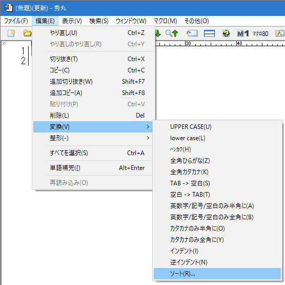
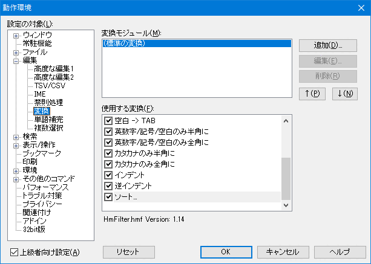

[HME0084A]
●行をソートすることは出来ませんか？

- 行をソートすることは出来ませんか？

-
秀丸エディタ Ver 5.00 から変換モジュールが導入され、 Ver 8.00からは「ソート」が標準添付の変換モジュールに組み込まれています。
メニューの「編集」→「変換」に「ソート」がない場合は、「動作環境」から設定を行う必要があります。

変換モジュールの設定は、メニューの「その他」→「動作環境」で動作環境を開き、「編集」→「変換」から"(標準の変換)"を選択し、「使用する変換」のソートにチェックを入れます。

変換モジュールに関しては、「第II部〜知っていると便利な秀丸の機能 変換モジュール」を参照してください。